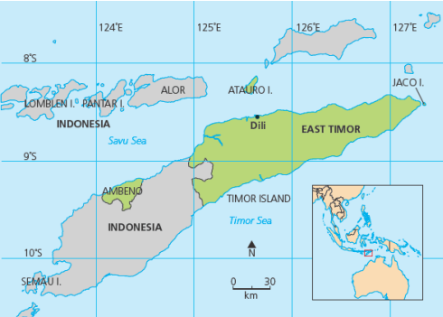
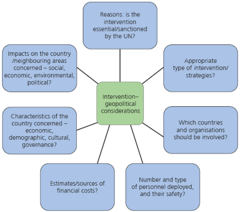

Secession, independence and maritime boundary governance
1. Context

East Timor sits north of Australia, beside the Timor Sea.

East Timor is useful for linking sovereignty, intervention and international recognition.
East Timor declared independence from Portugal in 1975, was invaded by Indonesia nine days later, and became a fully independent sovereign state in 2002.
2. Why It Is a Power and Borders Example
Changing political map: East Timor shows that the world map is dynamic and new sovereign states can emerge.
Secession and recognition: independence only becomes meaningful when a state controls territory and gains external recognition.
Conflict: Indonesian annexation meant East Timor's territorial integrity and self-determination were denied for many years.
UN relevance: the source highlights the role of the UN before and after independence as a key research focus.
1975
East Timor declared independence from Portugal and was invaded by Indonesia shortly afterwards.
2002
East Timor became a fully independent sovereign state.
2018
The Timor Sea Treaty resolved a boundary dispute with Australia using a median maritime boundary.
3. Maritime Boundary and Resources
The Timor Sea contains rich oil and gas reserves.
East Timor and Australia disputed access to these resources.
The 2018 Timor Sea Treaty, under UNCLOS, drew a median line maritime boundary between Timor and Australia.
This shows that sovereignty extends beyond land to agreed sea areas and seabed resources.
East Timor is a compact example for explaining new state formation, external recognition and maritime sovereignty.